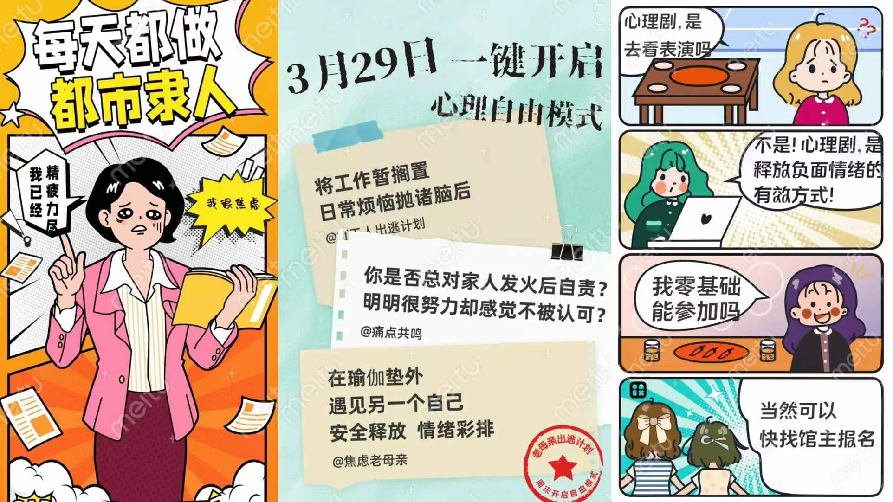
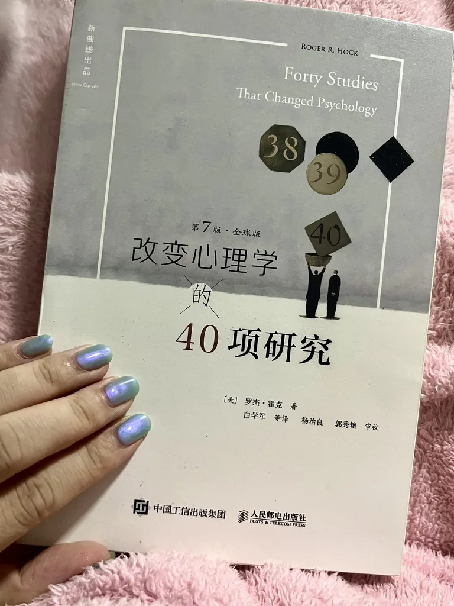
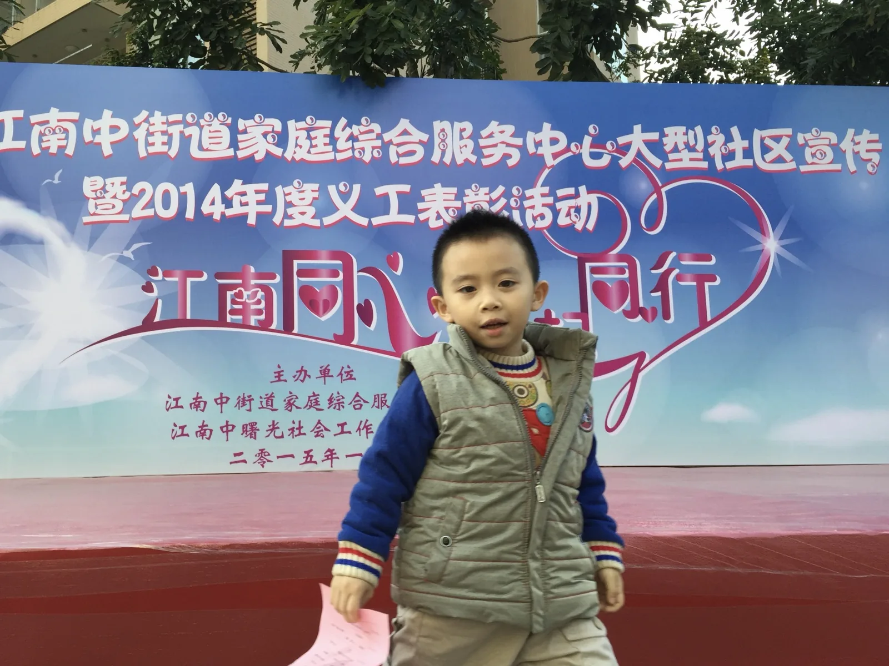
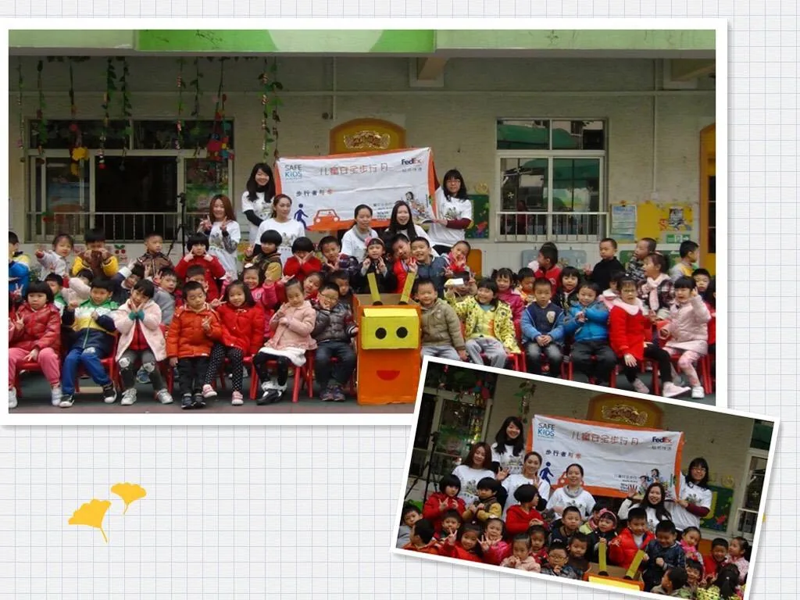
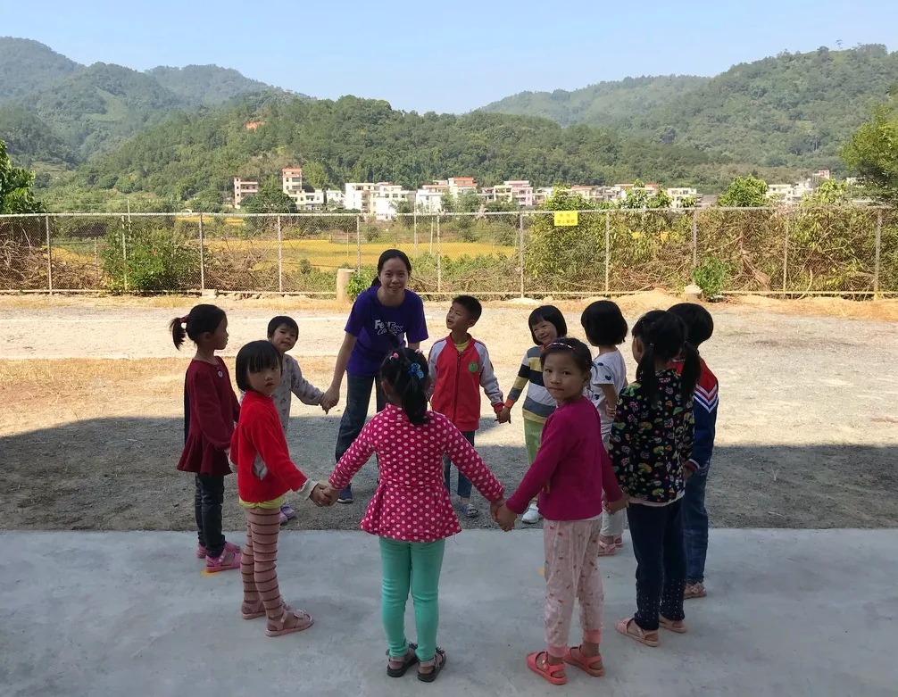
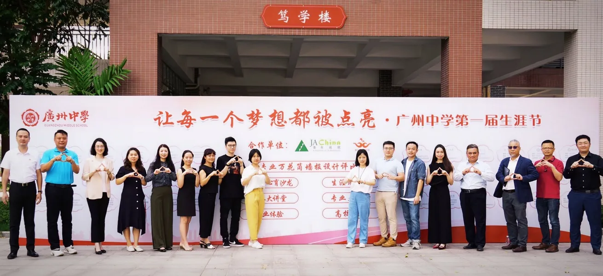
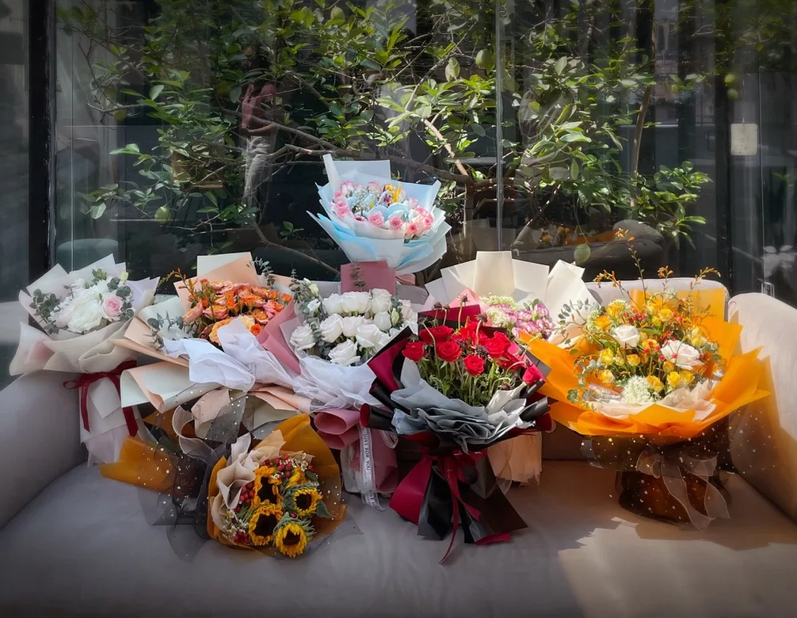

助人自助
本合集汇总多年来全年龄段亲子公益实践活动，依托发展心理学专业理论，消解亲子间的认知偏差、沟通代沟与情绪错位。
自助工具
从决策梳理、自我观察到认知实验与创作工具，按需要选择，先看清楚，再决定下一步。
决策支持
量表与自我观察
认知实验
博弈抉择
社会困境与损失厌恶
团队协作时，孩子选择单打独斗，是自私还是害怕？
见微知著
整体优先效应
孩子总被说"只看表面不重细节"，这是认知习惯问题吗？
心智突围
执行控制
平时成绩都很好，一到考试就粗心大意，怎么办？
记忆干扰
前摄抑制
要背的书都背不进去，这孩子就是懒吗？
找茬挑战
变化盲视
家长说"你怎么没看见"，孩子说"我看见了"，谁在盲视？
中断记忆
蔡格尼克效应
为什么孩子总惦记"那件事还没做完"？
性格透视
巴纳姆效应
星座说孩子"性格内向"，他就真的越来越内向？
颜色快判
斯特鲁普效应
孩子情绪上来了，道理讲再多也听不进去？
生日引力
自我参照效应
孩子说"我生日你都不记得"，为什么他这么在意？
从众实验
从众效应
孩子明明不想随大流，为什么还是跟着走了？
创作工具
看见心声
每一次相遇，都是一个故事。家长带着困惑来，孩子带着委屈来。我用倾听和理解，帮他们看见彼此的真实。
期末考试：家庭节奏稳定的力量
孩子平时稳在年级前三，一到期末就"滑铁卢"？复盘后发现：三次发挥失常，家里都有亲友来访。不是孩子能力下降，而是承载压力的"容器"变得不稳定了。
看见心声：真正影响考试发挥的，有时候不是多做一套试卷，而是考试前家庭节奏是否足够稳定
阅读全文 →
关女士：妈妈这一角色正在压垮她
她觉得自己应该"什么都管"：孩子的学习、丈夫的事业、老人的健康，每一件事都压在她身上。她越努力管，家人越想逃离，也渐渐看不见"妈妈"之外的自己。
看见心声：从"我什么都管"到"原来我也可以只是我自己"
阅读全文 →
"不唠叨的妈妈是最好的"
高一那年，因为家里出了些事，他书都看不进去。我陪伴他走过了那段最困难的时间。后来孩子说：不唠叨、默默陪伴我的妈妈是最好的。
看见心声：孩子需要的往往比我们以为的更少——不是说教，而是陪伴
阅读全文 →
陪伴成长
从社区到学校，从热线到花艺沙龙，每一次相遇，都是一次陪伴的机会。








先做一次 30 分钟初步梳理
看看当前的困扰、已经试过的方法，以及下一步可以先做什么。
免费 · 非诊断 · 非危机热线联系前请先了解未成年人参与方式与保密边界。